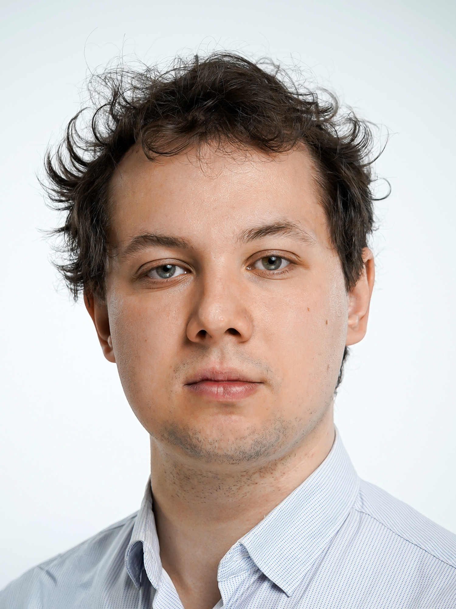

I am a postdoctoral researcher at the Max Planck Institute for Software Systems (MPI-SWS) in Kaiserslautern, Germany. I am a member of Georg Zetzsche's research group, which focuses on models of computation.
Previously, I was a PhD student at the Institute of Informatics, Faculty of Mathematics, Informatics and Mechanics, University of Warsaw, under the supervision of Wojciech Czerwiński. My PhD thesis is currently under review.
My research interests lie in theoretical computer science, particularly automata theory, computational complexity, and Vector Addition Systems with States (VASS).
| Email: | lorlikowski[at]mpi[dash]sws[dot]org |
| Office: | Max Planck Institute for Software Systems (MPI-SWS) |
| Paul-Ehrlich Strasse G 26 | |
| Kaiserslautern 67663 | |
| Germany |
